01Overview
Instead of a local web page, a bulb is controlled from the internet. A toggle on an Adafruit IO dashboard publishes to the bulb-control feed, and the ESP32, subscribed to that feed over MQTT, switches a relay that turns the bulb on and off.
02Concepts
MQTT publish / subscribe
MQTT is a lightweight messaging protocol. Devices publish messages to a topic and other devices subscribe to receive them, with a broker in the middle.
Adafruit IO feeds & dashboards
A feed stores a stream of values. A dashboard block, such as a toggle, reads from and writes to a feed.
Authentication
The ESP32 connects to the broker with the Adafruit IO username and AIO key. Keep the key private and never publish it on a public page.
03System Design
04Hardware & Software
Hardware
- ESP32 development board (ESP32 Dev Module)
- Relay module
- Bulb with holder and mains plug lead
- Jumper wires and micro-USB cable
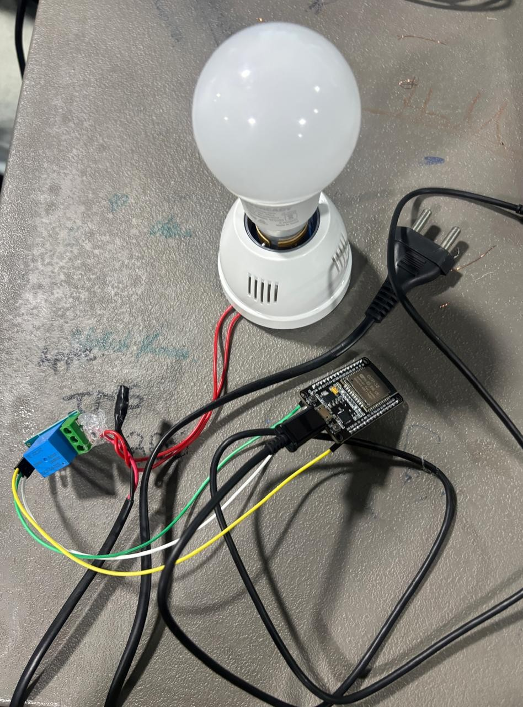
Software & platforms
- Arduino IDE
- Adafruit IO account (feed and dashboard: bulb-control)
- Adafruit MQTT library and Adafruit IO Arduino library
- Wi-Fi with internet access
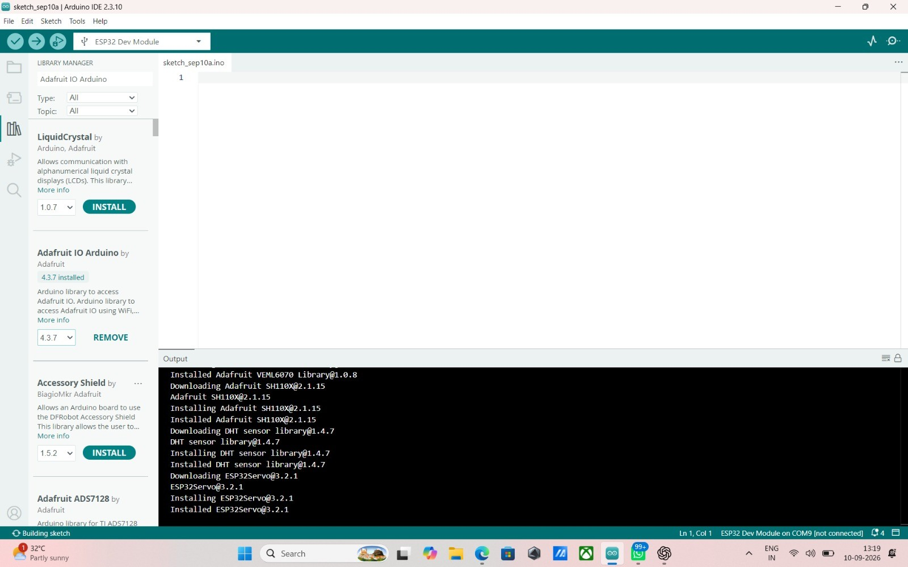
05Wiring / Setup
Check these connections against your own wiring.
| ESP32 pin | Connects to | Purpose |
|---|---|---|
| Relay IN | GPIO 23 (RELAY_PIN in the sketch) | Relay control signal |
| Relay VCC / GND | ESP32 power and ground | Relay module power |
| Relay output | Bulb holder (live line) | Switches the bulb |
The relay switches mains voltage. Keep the wiring insulated and do not touch it while powered.
06Implementation
#include <WiFi.h>
#include "Adafruit_MQTT.h"
#include "Adafruit_MQTT_Client.h"
// =================================================
// Wi-Fi
// =================================================
#define WIFI_SSID "YOUR_WIFI_NAME"
#define WIFI_PASS "YOUR_WIFI_PASSWORD"
// =================================================
// Adafruit IO
// =================================================
#define AIO_SERVER "io.adafruit.com"
#define AIO_SERVERPORT 1883
#define AIO_USERNAME "sachinn__s"
#define AIO_KEY "YOUR_NEW_ADAFRUIT_IO_KEY"
// =================================================
// RELAY
// =================================================
#define RELAY_PIN 23
// Relay logic
#define RELAY_ON HIGH
#define RELAY_OFF LOW
// =================================================
// MQTT
// =================================================
WiFiClient client;
Adafruit_MQTT_Client mqtt(
&client,
AIO_SERVER,
AIO_SERVERPORT,
AIO_USERNAME,
AIO_KEY
);
// =================================================
// BULB FEED
// =================================================
Adafruit_MQTT_Subscribe bulbControl =
Adafruit_MQTT_Subscribe(
&mqtt,
AIO_USERNAME "/feeds/bulb-control"
);
// =================================================
// CONNECT TO WIFI
// =================================================
void connectWiFi() {
Serial.print("Connecting to WiFi");
WiFi.begin(WIFI_SSID, WIFI_PASS);
while (WiFi.status() != WL_CONNECTED) {
delay(500);
Serial.print(".");
}
Serial.println();
Serial.println("WiFi Connected!");
Serial.print("IP Address: ");
Serial.println(WiFi.localIP());
}
// =================================================
// CONNECT TO ADAFRUIT IO
// =================================================
void connectMQTT() {
while (!mqtt.connected()) {
Serial.print("Connecting to Adafruit IO...");
int8_t ret = mqtt.connect();
if (ret == 0) {
Serial.println("Connected to Adafruit IO!");
}
else {
Serial.print("Failed, error = ");
Serial.println(mqtt.connectErrorString(ret));
mqtt.disconnect();
delay(5000);
}
}
}
// =================================================
// PROCESS BULB COMMAND
// =================================================
void processBulbCommand(String command) {
command.trim();
command.toLowerCase();
Serial.print("Received command: ");
Serial.println(command);
// -------------------------
// BULB ON
// -------------------------
if (command == "1" ||
command == "on" ||
command == "bulb on" ||
command == "bulbon") {
digitalWrite(RELAY_PIN, RELAY_ON);
Serial.println(">>> BULB ON");
}
// -------------------------
// BULB OFF
// -------------------------
else if (command == "0" ||
command == "off" ||
command == "bulb off" ||
command == "bulb of" ||
command == "bulboff" ||
command == "of") {
digitalWrite(RELAY_PIN, RELAY_OFF);
Serial.println(">>> BULB OFF");
}
// -------------------------
// UNKNOWN
// -------------------------
else {
Serial.print("Unknown command: ");
Serial.println(command);
}
}
// =================================================
// SETUP
// =================================================
void setup() {
Serial.begin(115200);
delay(1000);
Serial.println();
Serial.println("================================");
Serial.println("ESP32 BULB CONTROL");
Serial.println("================================");
// Relay setup
pinMode(RELAY_PIN, OUTPUT);
// Start with bulb OFF
digitalWrite(RELAY_PIN, RELAY_OFF);
// WiFi
connectWiFi();
// Subscribe to feed
mqtt.subscribe(&bulbControl);
// MQTT
connectMQTT();
Serial.println("System ready!");
}
// =================================================
// LOOP
// =================================================
void loop() {
// Reconnect WiFi if necessary
if (WiFi.status() != WL_CONNECTED) {
connectWiFi();
}
// Reconnect MQTT if necessary
if (!mqtt.connected()) {
connectMQTT();
}
// Keep MQTT connection alive
mqtt.processPackets(1000);
// Check for new feed value
Adafruit_MQTT_Subscribe *subscription;
while ((subscription = mqtt.readSubscription(100)) != NULL) {
if (subscription == &bulbControl) {
String command = String((char *)bulbControl.lastread);
processBulbCommand(command);
}
}
}Key sections of the code:
- Wi-Fi details (network name and password)
- Adafruit IO details (server io.adafruit.com, port 1883, username and key)
- Relay pin definition
- MQTT client and subscription to the bulb-control feed
- Code that switches the relay when the feed value changes
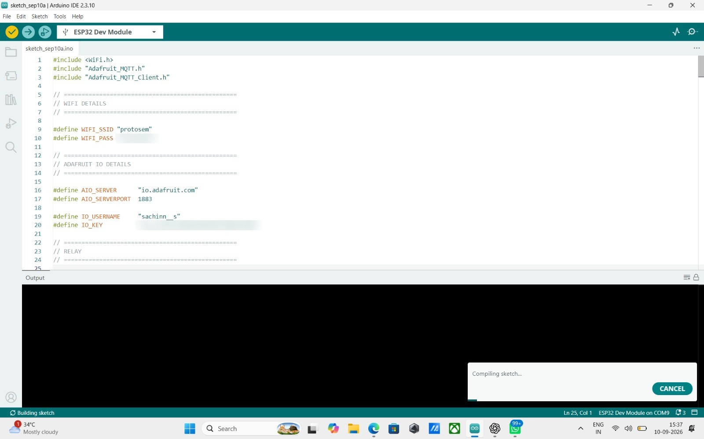
07Configuration
- Create a feed named bulb-control in Adafruit IO
- Create a dashboard called Bulb Control and add a toggle block linked to the feed
- Copy the Adafruit IO username and key into the sketch and keep the key private
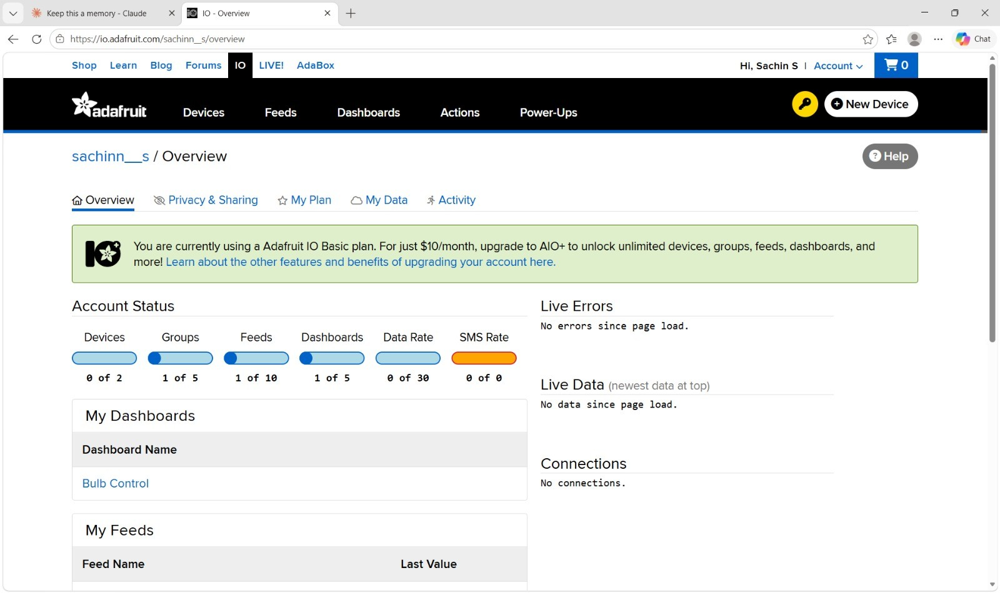
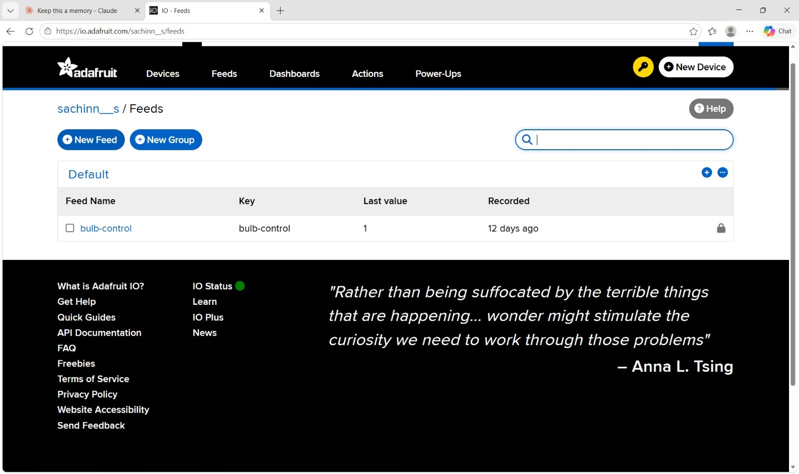
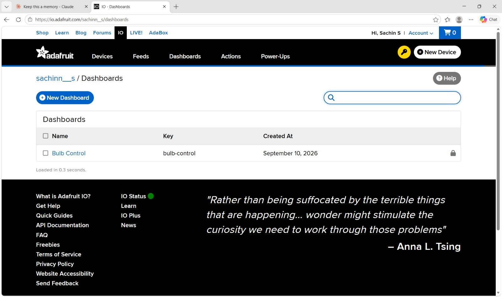
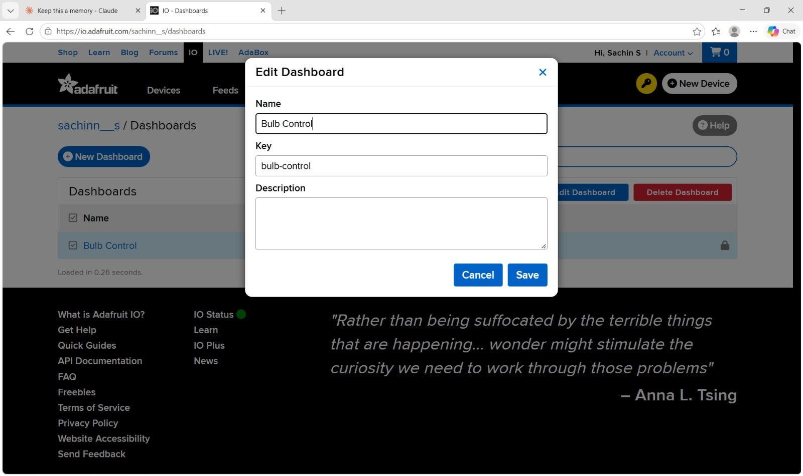
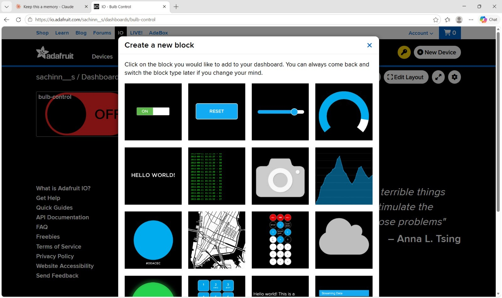
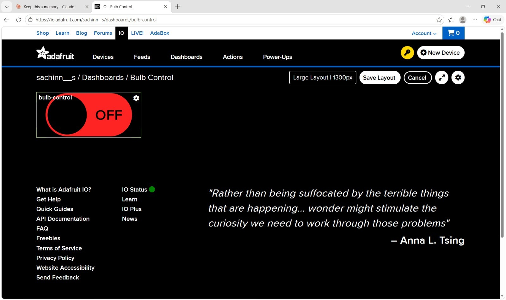
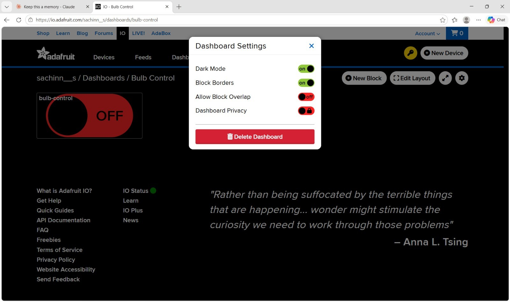
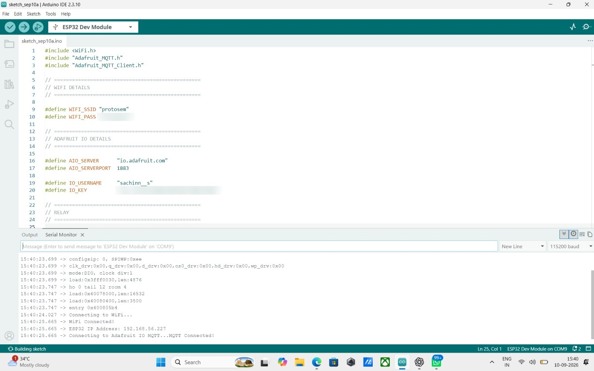
08Evidence
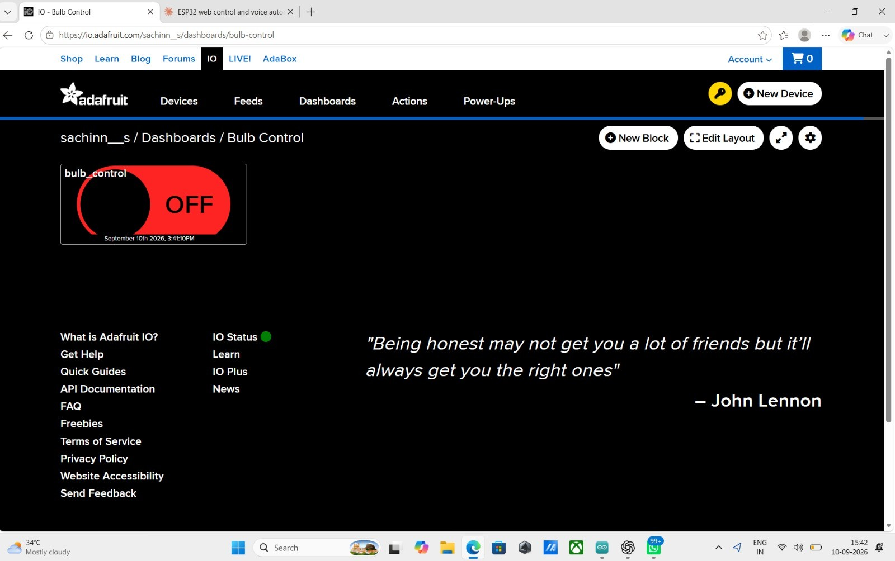
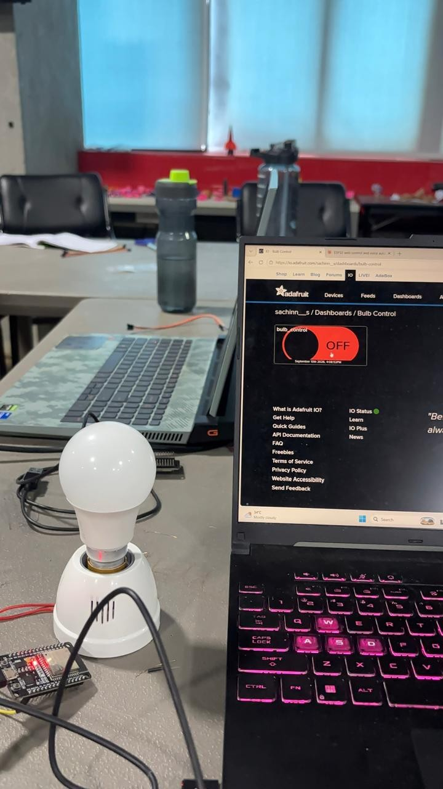
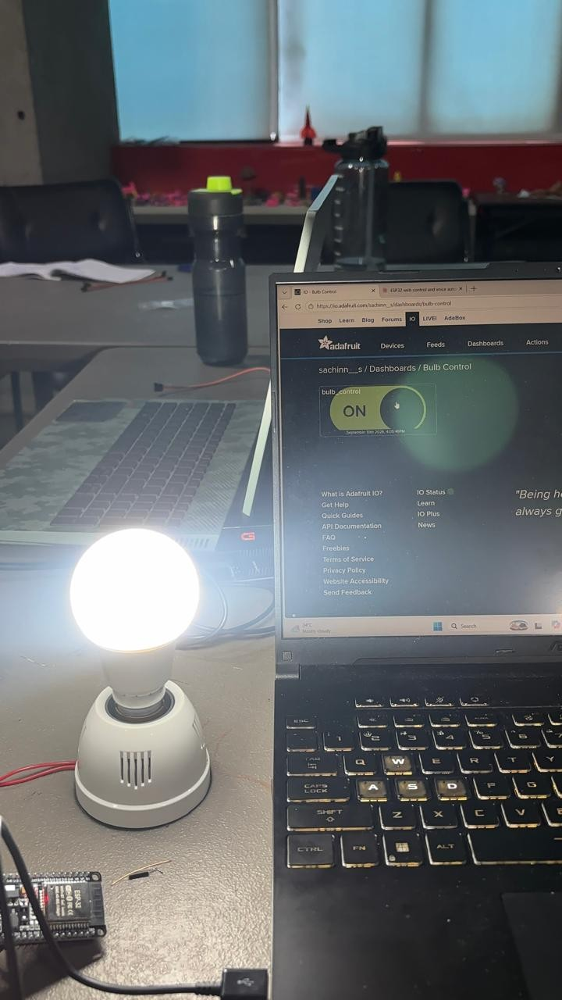
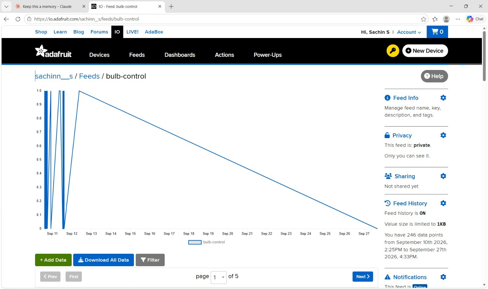
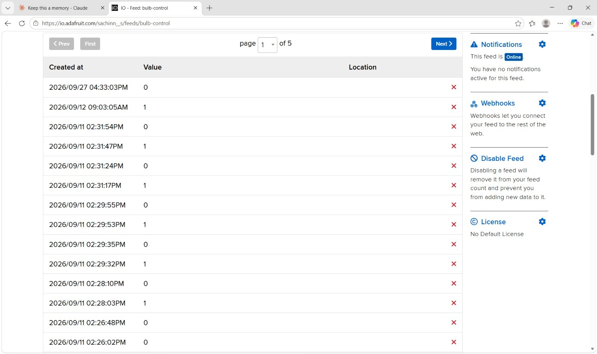
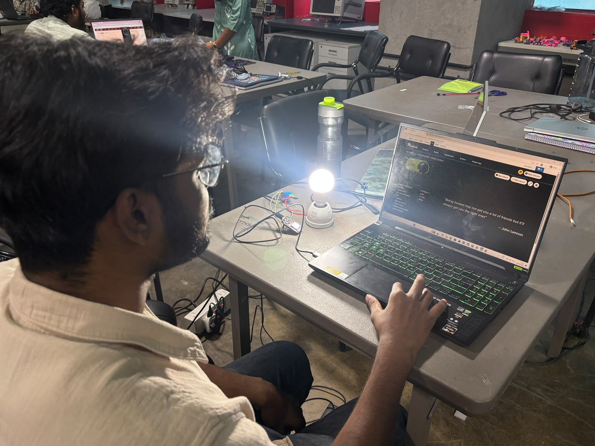
09Challenges & Fixes
- MQTT authentication kept failing. The Serial Monitor printed a connect error instead of “Connected to Adafruit IO!”, which turned out to be an old AIO key left in the sketch from an earlier test. I regenerated the key from the dashboard’s key dialog and swapped it into
AIO_KEY, and the connection went through on the first try after that. - The topic name had to match exactly. I originally typed the feed name slightly differently in the sketch than the feed I’d actually created on Adafruit IO, so subscribing silently did nothing since the topic didn’t exist. Double-checking the feed’s key on the Feeds page against
AIO_USERNAME "/feeds/bulb-control"in the code fixed it. - The toggle block didn’t send the value I expected. Depending on how I set up the Toggle block, Adafruit IO sometimes published
ON/OFFtext instead of1/0. Rather than fight the dashboard’s default labels, I madeprocessBulbCommand()accept several equivalent strings (on,bulb on,bulbon, and so on), so the relay responds correctly no matter which format the block sends.
10Reflection
The biggest difference from Task 1’s local web server is that I no longer need to know the ESP32’s IP address at all. In Task 1, the browser had to reach the ESP32 directly, so both devices had to share a network and I had to re-read the IP every time it changed. Here, the ESP32 only ever makes an outbound connection to Adafruit IO, and the dashboard talks to Adafruit IO too — the broker in the middle means I can flip the bulb from my phone on mobile data, nowhere near the protosem Wi-Fi, and it still works.
Publish/subscribe also changed how I think about the connection between “client” and “server.” Neither side is really either one — the dashboard publishes to a feed, the ESP32 subscribes to that same feed, and Adafruit IO just routes the message between whoever’s interested. That decoupling is what let me swap the relay/bulb hardware in without touching anything about how the dashboard is built.
11Repository Link
Source code for this task is on GitHub.
Open Task 2 on GitHub →Other tasks
ESP32 Web Server & HTML LED Control
Turn the ESP32 into a web server and switch an LED on and off from a browser page.
Task 3IFTTT + Adafruit IO IoT Automation
Trigger an IFTTT applet that drives an Adafruit IO feed and the ESP32 automatically.
Task 4Firebase IoT Monitoring Dashboard
Monitor temperature, humidity and light in a login-protected Firebase dashboard and control a bulb.
Task 5Firebase Logging, Automation & Data Export
The complete system: automatic LDR lighting, Firebase data logging, charts and CSV export.